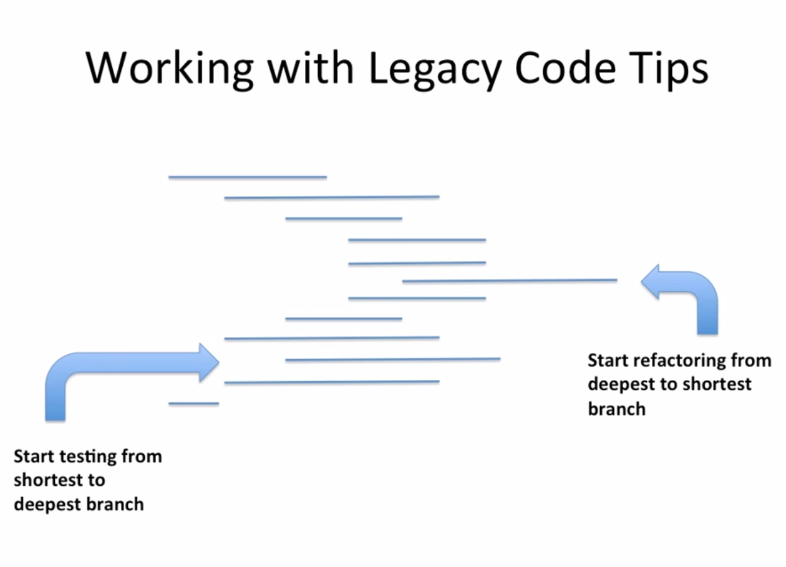

<!doctype html>
<html lang="en">

  <head>
    <meta charset="utf-8">

    <title>Lets Test Drive Some Code</title>

    <meta name="description" content="TITLE">
    <meta name="author" content="AUTHOR">

    <meta name="apple-mobile-web-app-capable" content="yes" />
    <meta name="apple-mobile-web-app-status-bar-style" content="black-translucent" />

    <meta name="viewport" content="width=device-width, initial-scale=1.0, maximum-scale=1.0, user-scalable=no, minimal-ui">

    <link rel="stylesheet" href="css/reveal.css">
    <link rel="stylesheet" href="css/theme/black.css" id="theme">
    <link rel="stylesheet" href="css/deck.css">
    <link rel="stylesheet" href="//cdn.jsdelivr.net/font-hack/2.018/css/hack.min.css">

    <!-- Code syntax highlighting -->
    <link rel="stylesheet" href="lib/css/github.css">

    <!-- Printing and PDF exports -->
    <script>
      var link = document.createElement( 'link' );
      link.rel = 'stylesheet';
      link.type = 'text/css';
      link.href = window.location.search.match( /print-pdf/gi ) ? 'css/print/pdf.css' : 'css/print/paper.css';
      document.getElementsByTagName( 'head' )[0].appendChild( link );
    </script>

    <!--[if lt IE 9]>
    <script src="lib/js/html5shiv.js"></script>
    <![endif]-->
  </head>

  <body>

    <div class="reveal">

      <!-- Any section element inside of this container is displayed as a slide -->
      <div class="slides">

<!-- ########################################################################################### -->
<!-- START                                                                                       -->
<!-- ########################################################################################### -->

<section data-markdown><script type="text/template">
## Working With Legacy Code

Dublin Software Craftsmanship Community
</script></section>

<!-- ########################################################################################### -->

<section data-markdown><script type="text/template">
### Working with legacy code

- Working with legacy code is a scary proposition
- Generally, we lack an understanding of the application and its codebase, and we don’t have automated test coverage.
- Michael Feathers in his book 'Working Effectively with Legacy Code',  defines legacy code as “code without tests”.
</script></section>

<!-- ########################################################################################### -->

<section data-markdown><script type="text/template">
### The Exercise

Imagine a social networking website for travellers

- You need to be logged in to see the content
- You need a be a friend to see someones else's trips

</script></section>
<section data-markdown><script type="text/template">
### Rules for exercise

- We can't change any existing code if it is not covered by tests. 
- The only exception is if we need to change the code to add unit tests, but in this case, just automated refactorings (via IDE) are allowed.
</script></section>

<section data-markdown><script type="text/template">
### Approach

- Tonight we start with a bad piece of code
- Read the code.
- Don’t change it. 
- Don’t start refactoring. 
- Please don’t start fixing it. 
- Just find out what it does.
- Know what it does? Alright, prove it. 
- Write some tests, lets start with a golden master
- These are characterization tests
- Then we can unit test
</script></section>

<section data-markdown><script type="text/template">
### What are Golden master or Characterization tests?

- Before making changes to legacy code, it is important to guard against unintended changes. 
- We could even introduce bugs by “fixing” behaviour.
- Characterization tests are a means of capturing the existing behaviour.
- They are meant to characterize what the system is already doing.

</script></section>

<section data-markdown><script type="text/template">
### How do we write Golden Master/Characterization tests

- We create a large set of diverse inputs and run them against the existing codebase.
- By recording and saving these outputs, we capture the existing behavior.
- These outputs from the original code base are called the 'Golden Master'
- Later when we need to modify/improve the source, we can replay them against the original 'master' outputs.
- Any differences between the original and new outputs help to identify unintended behaviour changes (or can be accepted if intentionally changed).

- It is important to note that the golden master is not a replacement for unit tests. Rather it gives you the safety net. 
- These tests will tell you that something has changed, it won't tell you whether it's correct that it changed.
- Most importantly it provides the safety net that we won't have broken anything.
</script></section>


<section data-markdown><script type="text/template">
### Lets start unit testing..

<a href="#/2">
              
            </a>
- Start testing from shortest to deepest branch. Why? There is too much setup otherwise
- Once that branch is tested, go to the next shortest branch, then the next etc.
- All branches tested? The rules of the exercise state we can start changing production code once everything is covered.
</script></section>

<section data-markdown><script type="text/template">
### Refactoring legacy code
- When refactoring, start from the deepest to the shortest branch. 
- The reason for this is if you start refactoring in the middle of your code you need to have all your flags set. If you go to the deepest, then the snippet of code has everything that it needs.
- Work in baby steps, commit early and often. 
- This is a technique that works really well with legacy code. You are working on a system that you are not familiar with. Mistakes can come out from any small change. You would not like to be in the situation where some tests stop passing and you do not know what you did.
</script></section>

<section data-markdown><script type="text/template">
### Working with Legacy Code Tips Cont..

Strive for simple design
  1. Passes its test
  1. Minimizes duplication - tends to allow a suitable structure to emerge
  1. Maximizes clarity - When you address bad names, you tend to see responsibilities slide into appropriate parts of the design

</script></section>

<section data-markdown><script type="text/template">
### Refactoring example

- An example, if I find duplicated code, I'm happy to extract to a method called foo(). 

- After a few minutes of working with foo() I understand more what foo() does, so I give it a more meaninful name computeCost().

- As I write tests for computeCost(), I find it does more than compute cost, so I rename it to precisely what it does - findItemAndComputeCost()

- The mere prescence of a And/Or/Then tells me that it's violating the single responsibility principle.

- I split this method into two methods, One findItem(), the other computeCost()

- When I look at computeCost(), I see it adds taxes and shipping charges to the net price of an item.

- This leads me to split this behaviour into multiple method, each that applies a charge to an order item.

- So I might now have an OrderItem class, and an OrderItemCharge interface, Shipping and Vat might be concrete implementations or OrderItemCharge.

- These more meaningful names communicate the intent/design much better than computeCost

- There are tonnes of other refactorings to apply, Martin Fowlers 'Refactoring - Improving the design of existing code' is an excellent start. 
</script></section>

<section data-markdown><script type="text/template">
### Add a feature - I want to be able to support different reports (JSON, text, XML)

* Still have time? Identify and fix an area of code which breaks the single responsiblity principle (ahem, it's in the report thats generated)
* For now we only need to support text interface, but client wants it extensible with ease.
* Use the following steps:
  1. Extract the offending behaviour into its own method or function. 
  1. Move that method to a new class and make it publicly accessible.
  1. Write tests for it
  1. Refactor until you like the interface 
</script></section>


<section data-markdown><script type="text/template">
### Retro

* How did you find it? Comments feedback welcome

Thanks, Joe/Paul
</script></section>

<section data-markdown><script type="text/template">
### Resources

* http://blog.adrianbolboaca.ro
* http://codurance.com/blog/author/sandro-mancuso/
* http://craftedsw.blogspot.ie/2012/11/testing-legacy-code-with-golden-master.html
* https://chrismelinn.wordpress.com/2013/04/12/using-the-golden-master-technique-to-test-legacy-code/
* http://blog.jbrains.ca/permalink/the-four-elements-of-simple-design
</script></section>


<!-- ########################################################################################### -->
<!-- END                                                                                         -->
<!-- ########################################################################################### -->

      </div>

    </div>

    <script src="lib/js/head.min.js"></script>
    <script src="js/reveal.js"></script>

    <script>

      // Full list of configuration options available at:
      // https://github.com/hakimel/reveal.js#configuration
      Reveal.initialize({
        controls: true,
        progress: true,
        history: true,
        center: true,

        transition: 'slide', // none/fade/slide/convex/concave/zoom

        // Optional reveal.js plugins
        dependencies: [
          { src: 'lib/js/classList.js', condition: function() { return !document.body.classList; } },
          { src: 'plugin/markdown/marked.js', condition: function() { return !!document.querySelector( '[data-markdown]' ); } },
          { src: 'plugin/markdown/markdown.js', condition: function() { return !!document.querySelector( '[data-markdown]' ); } },
          { src: 'plugin/highlight/highlight.js', async: true, callback: function() { hljs.initHighlightingOnLoad(); } },
          { src: 'plugin/zoom-js/zoom.js', async: true },
          { src: 'plugin/notes/notes.js', async: true }
        ]
      });

    </script>

  </body>
</html>
